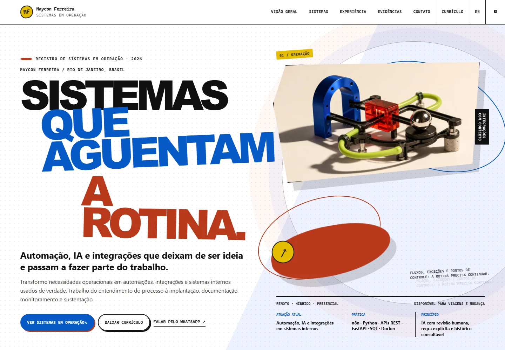
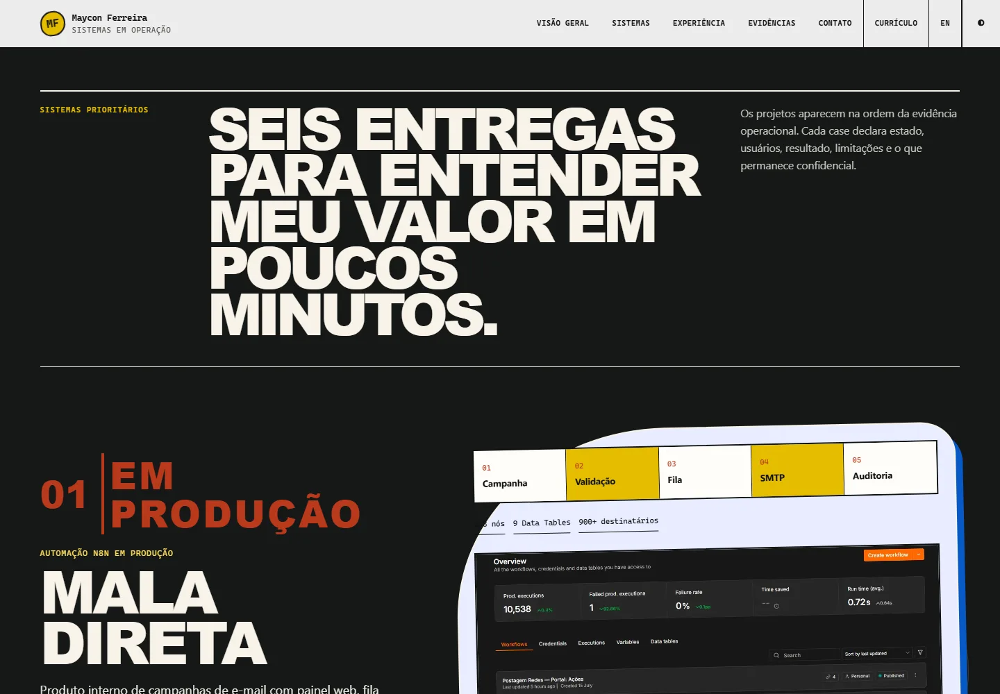
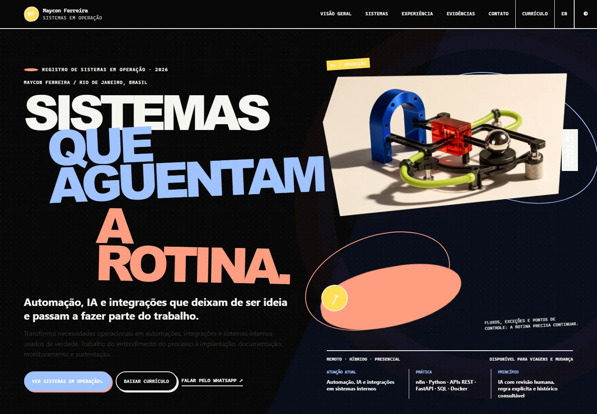

Contexto e problema
Os projetos e evidências estavam espalhados e a versão anterior do site comunicava um posicionamento profissional ultrapassado.
CASE / PORTFOLIO-2026
DEMONSTRAÇÃO PÚBLICAEste portfólio
Portfólio bilíngue que reúne meus projetos, resultados, decisões técnicas e limites atuais.

TELAS E FLUXOS


Sobre as imagens
As imagens abaixo mostram o produto real ou reconstruções sanitizadas. Quando algo não é uma captura direta, isso fica indicado na própria legenda.
Limites da versão pública
Dados operacionais, credenciais, integrações privadas e informações de clientes não fazem parte desta publicação.
Os projetos e evidências estavam espalhados e a versão anterior do site comunicava um posicionamento profissional ultrapassado.
Estratégia, conteúdo, dados, experiência, acessibilidade, SEO e publicação no GitHub Pages.
HTML semântico gerado estaticamente, CSS responsivo, JavaScript apenas para menu, busca e filtros, rotas PT/EN, páginas individuais e GitHub Actions.
Limites desta versão
O site não executa backends privados; direciona para evidências e produtos reais.
Próximos passos
A evolução depende do estado e das limitações descritas neste case; não é apresentada como funcionalidade já entregue.
A versão pública não contém credenciais, dados pessoais ou informações internas sensíveis.